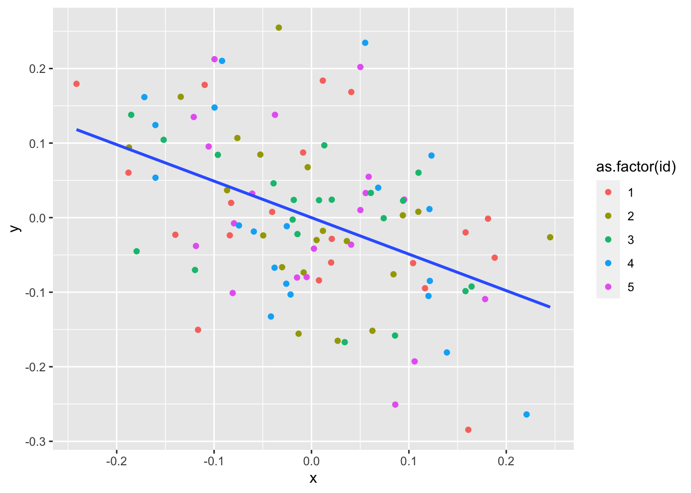

library(tidyverse)Week 5
Part 1: The Effect of Measurement Error
Suppose that there is a linear relationship between the scalar variable \(x_{n}\) and the conditional expectation of \(y_{n}\):
\[ y_{n} = \beta_{0} + \beta_{1}x_{n} + \epsilon_{n}\]
where \(\epsilon_{n}\) is the prediction error which by definition satisfies:
\[ \mathbb{E}[\epsilon_{n}|x_{n}] = 0 \]
(1.1)
Show that the population parameter \(\beta_{1}\) can be written as:
\[ \beta_{n} = \frac{\mathbb{C}(y_{n},x_{n})}{\mathbb{V}(x_{n})}.\]
Here is a hint. Do the following:
- Evaluate \(\mathbb{C}(y_{n},x_{n})\) by substituting in the formula \(y_{n} = \beta_{0} + \beta_{1}x_{n} + \epsilon_{n}\) and using rules from your stats cheat sheet.
- Then use that: \[ \mathbb{C}(\epsilon_{n},x_{n}) = \mathbb{E}[\epsilon_{n}(x_{n} - \mathbb{E}[x_{n}])] = 0 \]
(1.2)
Now suppose that \(x_{n}\) is observed with measurement error.
\[ x^*_{n} = x_{n} + \upsilon_{n} \]
where \(\upsilon_{n}\) is independent of every other variable and has variance \(\sigma^2_{\upsilon}\). Suppose you try to estimate \(\beta_{1}\) using the linear model:
\[ y_{n} = \tilde{\beta}_{0} + \tilde{\beta}_{1}x^*_{n} + \tilde{\epsilon}_{n}.\]
Following the same steps above, show that
\[ \tilde{\beta}_{1} = \frac{\mathbb{C}(y_{n},x^*_{n})}{\mathbb{V}(x^*_{n})} \neq \beta_{1} \]
and hence that the OLS estimator of the above linear model is not a consistent estimator for \(\beta_{1}\).
(1.3)
Write a simulation to show that your formula for \(\tilde{\beta}_{1}\) relative to \(\beta_{1}\) is correct. To help you, here is code that evaluates the estimator without measurement error, assuming that \(x_{n}\sim\mathcal{N}(0,1)\) and \(\epsilon_{n}\sim\mathcal{N}(0,\sigma^2_{\epsilon})\).
est_beta <- function(N,sig_eps,beta) {
x = rnorm(N)
y = beta[1] + x*beta[2] + rnorm(N,0,sig_eps)
# return the estimate for beta_{1}
cov(y,x)/var(x)
}Set \(\beta_{0} = 1\), \(\beta_{1}=0.5\), and \(\sigma_\epsilon=0.3\).
btrue <- c(1,0.5)
sig_eps <- 0.3Notice that as we increase the number of observations we get closer and closer to the true value of \(\beta_{1}\):
for (N in c(10,100,1000,10000)) {
b_est <- est_beta(N,sig_eps,btrue)
print(paste("Sample size of", N,": ",b_est))
}[1] "Sample size of 10 : 0.668910246726913"
[1] "Sample size of 100 : 0.477182823632863"
[1] "Sample size of 1000 : 0.502675169496832"
[1] "Sample size of 10000 : 0.50136063905263"Your answer for (1.2) should give you a formula for bias in \(\hat{\beta}_{1}\) as \(N\rightarrow\infty\). All you need to do is edit the function and show the OLS estimator with measurement error has a bias that approaches what is implied by your formula.
Part 2: “Fixed Effects” and Frisch-Waugh-Lovell
If you read applied papers in economics (and other fields) you will see the phrase “fixed effects” a lot. It just means that there is an individual dummy term for each unique realization of a discrete variable. For example, the phrase: “we regress log wages on education as well as age and year fixed effects” means that you are adding dummies for each year and age in the data to your regression as well as education. You will often see it written this way:
\[ \log(W_{nt}) = \beta_{0} + \beta_{1}\text{Educ}_{nt} + \mu_{a} + \gamma_{t} \]
where \(\mu_{a}\) and \(\gamma_{t}\) are the age and year “fixed effects”, respectively.
Now suppose that we have a linear model:
\[ \mathbf{Y} = \mathbf{X}\beta + \mathbf{W}\gamma + \epsilon\]
The Frisch-Waugh-Lovell (FWL) theorem says that if we want to estimate \(\beta\), we can first regress or “project” both \(\mathbf{X}\) and \(\mathbf{Y}\) on \(\mathbf{W}\), and then compute the OLS estimator \(\hat{\beta}\) by regressing the residuals for \(\mathbf{Y}\) on the residuals for \(\mathbf{X}\). Formally:
\[ \hat{\mathbf{X}} = (\mathbf{I} - \mathbf{W}(\mathbf{W}^{T}\mathbf{W})^{-1}\mathbf{W}^{T})\mathbf{X} \] \[ \hat{\mathbf{Y}} = (\mathbf{I} - \mathbf{W}(\mathbf{W}^{T}\mathbf{W})^{-1}\mathbf{W}^{T})\mathbf{Y} \] And then: \[ \hat{\beta} = \left(\hat{\mathbf{X}}^{T}\hat{\mathbf{X}}\right)^{-1}\hat{\mathbf{X}}^{T}\hat{\mathbf{Y}}. \]
Why do we care? Back in the day this made regressions that were difficult to compute more manageable. These days, if the number of “fixed effects” is very large, it can save a lot of time to first de-mean all of the other variables at the level of the fixed effect. For example if we have individual fixed effects we might first de-mean by individual. Here is a simple example. Let the model be:
\[ y_{nt} = \beta x_{nt} + \mu_{n} + \epsilon_{nt} \] with \(N=5\) individuals and \(T=20\) observations each. We let each \(x_{nt}\) be correlated with \(\mu_{n}\) by assuming:
\[ x_{nt} = \mu_{n} + 0.1\times\eta_{nt}, \eta_{nt}\sim\mathcal{N}(0,1) \]
data_gen <- function(b) {
d <- data.frame()
mu = seq(-1,1,length.out=5) #<- draw the fixed effects
for (t in 1:20) {
xt = mu + 0.1*rnorm(5)
d <- rbind(d,data.frame(id=1:5,t=t,x=xt,y = b*xt + mu + 0.1*rnorm(5)))
}
d
}We first see that if we want to recover the true slope \(\beta\) it is important to control for fixed effects:
d <- data_gen(-0.5) # <- set the true value of beta to be -0.5
ggplot(d,aes(x=x,y=y)) + geom_point(aes(color=as.factor(id))) + geom_smooth(method="lm",se=FALSE)`geom_smooth()` using formula = 'y ~ x'Of course we could just throw in dummies for each id type. Using FWL we can also just de-mean by the id variable and get a nice visual depiction of how the theorem works. Look at what happens once we de-mean:
demean <- d %>%
group_by(id) %>%
mutate(y = y-mean(y),x=x-mean(x))
demean %>% ggplot(aes(x=x,y=y)) + geom_point(aes(color=as.factor(id))) + geom_smooth(method=lm,se=FALSE)`geom_smooth()` using formula = 'y ~ x'
We can confirm that each version gives us the same point estimate of \(\beta\):
lm(y ~ 0 + x + as.factor(id),d) %>%
summary()
Call:
lm(formula = y ~ 0 + x + as.factor(id), data = d)
Residuals:
Min 1Q Median 3Q Max
-0.20862 -0.06797 -0.01193 0.06648 0.26154
Coefficients:
Estimate Std. Error t value Pr(>|t|)
x -0.489661 0.099024 -4.945 3.32e-06 ***
as.factor(id)1 -1.005694 0.099704 -10.087 < 2e-16 ***
as.factor(id)2 -0.543963 0.053485 -10.170 < 2e-16 ***
as.factor(id)3 0.004453 0.022858 0.195 0.846
as.factor(id)4 0.512718 0.052588 9.750 6.25e-16 ***
as.factor(id)5 1.005613 0.099374 10.119 < 2e-16 ***
---
Signif. codes: 0 '***' 0.001 '**' 0.01 '*' 0.05 '.' 0.1 ' ' 1
Residual standard error: 0.1021 on 94 degrees of freedom
Multiple R-squared: 0.9377, Adjusted R-squared: 0.9337
F-statistic: 235.7 on 6 and 94 DF, p-value: < 2.2e-16lm(y ~ 0 + x,demean) %>%
summary()
Call:
lm(formula = y ~ 0 + x, data = demean)
Residuals:
Min 1Q Median 3Q Max
-0.20862 -0.06797 -0.01193 0.06648 0.26154
Coefficients:
Estimate Std. Error t value Pr(>|t|)
x -0.48966 0.09649 -5.075 1.82e-06 ***
---
Signif. codes: 0 '***' 0.001 '**' 0.01 '*' 0.05 '.' 0.1 ' ' 1
Residual standard error: 0.09954 on 99 degrees of freedom
Multiple R-squared: 0.2064, Adjusted R-squared: 0.1984
F-statistic: 25.75 on 1 and 99 DF, p-value: 1.819e-06